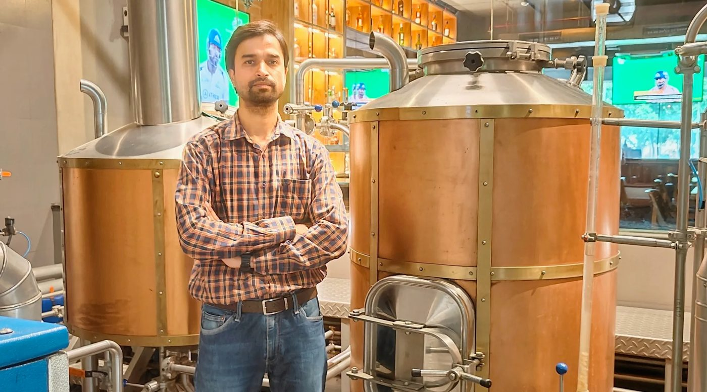
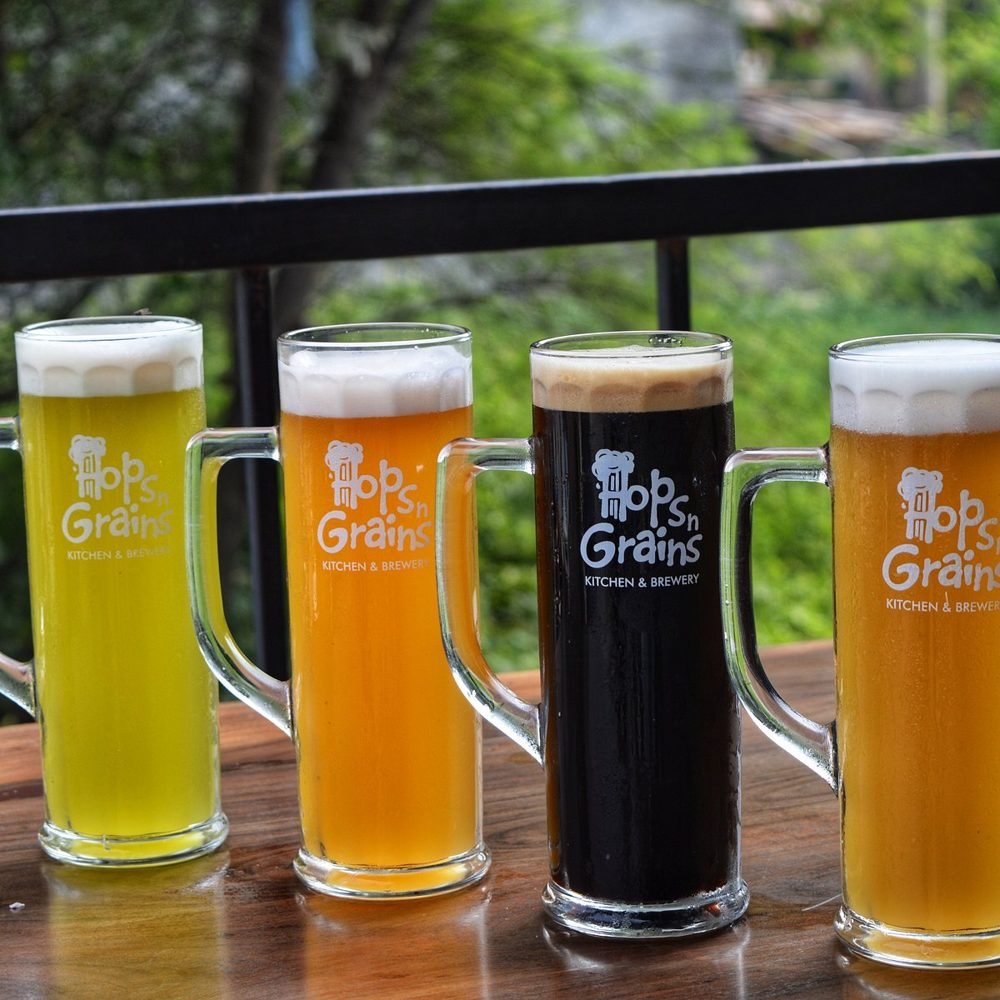

Gagan Deep's seasonal beers: brewing a beer to match the menu
Hops n Grains brewmaster Gagan Deep has talked about one habit more than any other: brewing seasonal beers alongside food that suits them. Here is what that looks like and how to do it in your own brewpub.

One sentence, a whole approach
"We have been experimenting with seasonal beers and food that goes with it." That is how Gagan Deep, in-house brewmaster at Hops n Grains, described his work to The Tribune in 2018. It sounds simple. In a brewpub it means the brewer and the kitchen planning a release together, rather than the beer arriving and the chef finding something to put next to it.
Hops n Grains, the Tricity brewpub group founded by Amritanshu Agrawal and Dr Priyanka Gupta, still runs on that idea. Its website lists six seasonal beers on tap at any time, next to the regular lager, wheat beer and dark beer.

The cricket season Dubbel
The example in that 2018 piece was a Belgian Dubbel, brewed for the IPL season, with caramel and toffee notes. The kitchen built a cricket menu around the beer.
It is a smart choice of style. A Dubbel is a strong, malty Belgian ale, usually around 6 to 7.5% ABV, coloured with dark candi sugar and specialty malts. Its dried fruit and caramel flavours stand up to fried and grilled food. Its carbonation, typically high for the style, scrubs fat from the palate between bites. Cricket evenings in a North Indian brewpub mean kebabs, sliders and croquettes. A Dubbel handles all of them.

Plan the beer and the dish together
If you want to run seasonal beers the same way, start with the occasion, not the recipe. Cricket, monsoon, winter weddings, Lohri and Diwali each bring their own food. Decide what people will be eating first.
- List the season's dishes with the chef. Note fat, spice, sweetness and smoke.
- Pick a style that answers them. Spice wants modest bitterness. Fat wants carbonation or roast. Sweet desserts want a beer at least as sweet.
- Brew a pilot batch and taste it with the actual dishes, cooked by the actual kitchen.
- Adjust one thing at a time. Usually that is bitterness or finishing gravity.
- Brief the floor staff so they can sell the pairing in one sentence.
Our guide to beer and food pairing explains the rules of thumb behind step two.
A North Indian seasonal calendar
A brewpub in the Tricity has clear seasons to brew for. Each suggests a different kind of beer:
- Spring and the cricket season, roughly March to May: sessionable beers for long evenings, with one stronger special for match nights.
- High summer: light lagers, wheat beers and fruit beers served very cold.
- Monsoon: beers with a little more body and spice to go with pakoras and chai-time snacks.
- Winter, from November to February: darker, stronger beers such as a Dubbel, a bock or a stout, alongside heavier food and wedding-season parties.
None of this is fixed. It is a starting grid for a conversation with the chef. The brewpubs that do seasonal beer well tend to keep a simple calendar like this on the brewhouse wall and plan two seasons ahead.
Lead times are the hard part
A seasonal beer only works if it is ready when the season starts. A lager-strength ale can be grain to glass in about three weeks. A Dubbel needs longer, because a strong beer brewed with Belgian yeast needs time to finish fermenting and smooth out. Bottom-fermented lagers need longer again for cold conditioning.
So a brewpub planning a cricket beer needs the recipe fixed and the specialty malt in the store a month or more before the first match. Imported specialty malt can take weeks to arrive. That is where many seasonal plans quietly fail: the idea was good, the malt was late. Our guide to seasonal and limited releases covers the planning calendar.
Taste it the way a guest will
The last step is the one brewers skip most often. Taste the beer with the food, at the temperature it will be served, in the glass it will be served in. A Dubbel served at 4 °C to match the lager taps will taste thin and closed. Served nearer 10 to 12 °C, its malt and fruit open up and the pairing starts to make sense.
This is a sensory skill. It can be trained. A brewer who can describe precisely what a beer does to a plate of tikka can brief a chef, write a menu note and fix a recipe. That brewer is worth a great deal more to a brewpub than one who can only say the beer tastes good.
Common questions
What seasonal beer did Hops n Grains brew for cricket season?
In 2018 brewmaster Gagan Deep's team brewed a Belgian Dubbel with caramel and toffee notes for the IPL season, served with a cricket-themed menu.
How far ahead should a brewpub plan a seasonal beer?
At least a month for most ales and longer for strong beers or lagers. Order specialty malt early because imports can take weeks.
What temperature should a Dubbel be served at?
Warmer than a lager. Around 10 to 12 °C lets its malt and dried fruit flavours show.